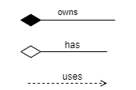
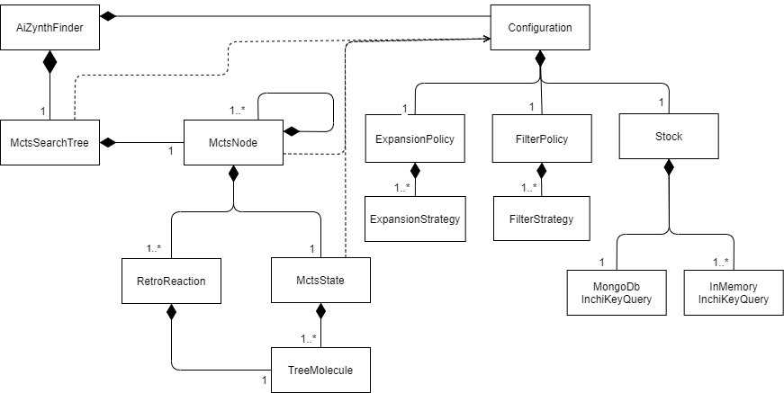
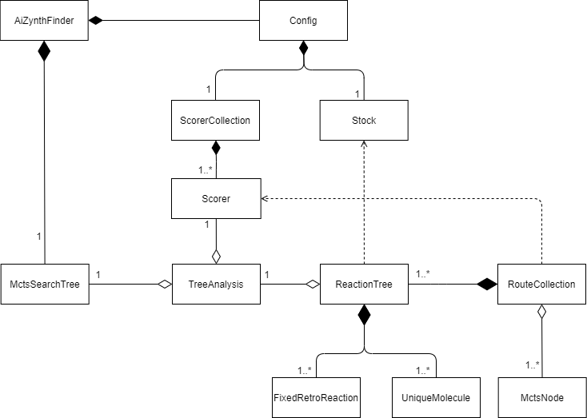

Relationships¶
This page shows some relationship diagrams, i.e. how the different objects are connect in a typical retrosynthesis analysis using Monte Carlo tree search.
These are the tree different types of relationships used:
Tree search¶
This diagram explains how the different object are connect that are responsible for the Monte-Carlo tree search.
Analysis / post-processing¶
This diagram explains how the different objects involved in the analysis of the search are connected.
